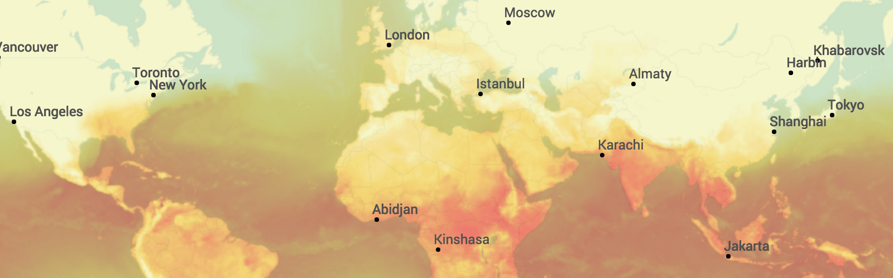

Urbica Design analyzed the performance statistics of the city bicycle rental in 2015 for the Department of Transport of Moscow. Data on 812 000 rides at 300 rental stations were studied and analyzed taking into account each ride direction and thematic segments. The detailed analysis identified main schemes of how bicycles were used in different districts of the city and explicitly showed the dependency of weather conditions on the use of a bicycle by various categories of riders.
Go to the project
Read the full story about the project.

MAPS.ME is a popular mobile app, which is used by about 20 million users worldwide. It is a most detailed offline map of the world based on OpenStreetMap data. We have investigated the patterns of use and have created modern and clear map style.
Read the story about the project.
Walking Streets is a independent study of pedestrian conditions research in the center of Moscow. The width of sidewalks, accessibility to venues, underpasses, street noise pollution and interesting places have been investigated during research.
Go to the project or read the story of creation.

Maps with their improved interface provide vivid picture of global weather conditions or details of local weather in the area. Сlear and concise design of weather maps like map with current weather condition, clouds, precipitation, pressure, rain, snow, and others in brand new style is available on OpenWeatherMap.
The project shows Moscow bike share stats since 9 Jun to 11 Nov 2014. Interactive data visualisations shows popular bike share stations and routes from them and shows how weather conditions influence on the bike share activity.
Go to the project
City streets elevation interactive data visualisation.
Go to the project